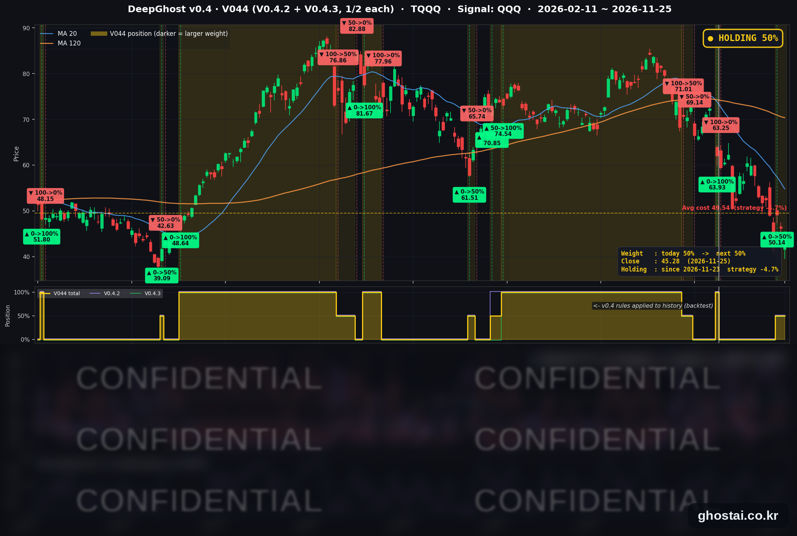

나스닥 장중 4.6% 급락 뒤 0.6% 하락 마감·다우는 상승, TQQQ 비중 50% 유지
· Ghost.AI 데일리 리포트
👻 매일 시그널과 히스토리를 홈페이지에서 한눈에 → www.ghostai.co.kr
회원 페이지 안내 — 회원 가입 데일리 레포트의 "오늘의 매매 신호"는 26년 12월 31일까지만 제공됩니다. 이후는 회원 페이지(무료) 에서 확인하시기 바랍니다.
AI 주식을 중심으로 매도가 나오며 3.31% 낮게 출발한 나스닥은 장중 4.64% 까지 내렸다가 0.62% 하락으로 마감했습니다. S&P 500 은 0.25% 내렸고 다우는 0.33% 올랐으며, S&P 500 구성종목은 493개 중 366개가 상승했습니다. 10월 근원 PCE 물가가 예상보다 높았지만 10년물 금리는 4.848% 로 5.6bp 내렸고, VIX 는 28.29 로 올랐습니다. TQQQ 는 1.97% 내린 45.28달러로 마감했고, 전략은 새 신호 없이 비중 50% 를 유지합니다.
📊 오늘의 매매 신호
| 항목 | 내용 |
|---|---|
| 오늘의 신호 | 🟡 신규 신호 없음 — 전략은 TQQQ 비중 50% 보유를 유지합니다 |
| 전략 비중 | 50% → 다음 거래일(11월 27일) 시가 50% |
| 포지션 상태 | 📈 TQQQ 일부 보유 중 (비중 50%) |
| 보유 시작일 | 2026-11-23 (3거래일째) |
| 매수 체결가 → 현재가 | $50.14 → $45.28 |
| 보유 기간 전략 수익률 | -4.72% |
TQQQ 시그널 — IN POSITION (비중 50%)
현재 상태: TQQQ 일부 보유 중 (비중 50%) | 보유 기간 전략 수익률 -4.72%

전략은 11월 23일(월) 미국 장 시가 50.14달러에 산 TQQQ 비중 50% 를 유지합니다. 오늘 새 매매 신호와 체결은 없고, 다음 거래일인 11월 27일(금)에도 매매는 없습니다. 11월 26일(목)은 추수감사절 휴장입니다.
TQQQ 는 전일 종가보다 9.93% 낮게 출발해 39.59달러(-14.29%)까지 내렸다가 45.28달러(-1.97%)로 마감했습니다. 비중 50% 를 반영한 보유 기간 전략 수익률은 전일 -3.98% 에서 -4.72% 로 낮아졌습니다.
홈페이지 「오늘의 시그널」은 v0.3 기준이라 오늘도 현금 보유로 표시됩니다. 이 글의 신호는 같은 AI 신호에 비중 조절을 더한 개선판 v0.4 기준이며, 자세한 화면은 회원 페이지에서 볼 수 있습니다.
오늘 미국 시장 — 시황 요약
지수 마감
| 지수 | 종가 | 등락률 | 장중 저가 (전일 대비) | 시가 → 종가 |
|---|---|---|---|---|
| S&P 500 | 7,182.78 | -0.25% | -3.21% | +1.73% |
| 나스닥 종합 | 23,585.80 | -0.62% | -4.64% | +2.78% |
| 다우존스 | 50,182.95 | +0.33% | -2.21% | +1.44% |
| 러셀 2000 (IWM) | 268.87 | +0.65% | -2.36% | +2.14% |
| QQQ (나스닥100) | 633.93 | -0.65% | -4.75% | +2.73% |
| TQQQ | 45.28 | -1.97% | -14.29% | +8.83% |
QQQ 는 전일보다 3.29% 낮게 출발했습니다. 시가 하락 폭으로는 2025년 4월 7일(-3.31%) 이후 가장 큽니다. 저가에서 종가까지는 4.31% 올라, 이 상승 폭은 2025년 4월 9일 이후 가장 큽니다. 다우가 장중 2% 넘게 내렸다가 상승 마감한 것은 2022년 2월 24일 이후 처음입니다. 시가와 장중 저가는 잠정 값입니다.
전일 종가에서 저가까지 내린 폭 가운데 S&P 500 은 92%, 나스닥은 87% 를 되찾았고, 다우와 IWM 은 전일보다 높게 마감했습니다.
그래도 S&P 500 은 최근 10거래일 중 9거래일 내렸습니다. 10월 6일 최고 종가보다 S&P 500 은 8.14%, 나스닥은 14.54% 낮고, 주요 지수는 모두 200일 이동평균선 아래입니다(다우 -1.16%, S&P 500 -2.31%, 나스닥 -6.29%).
국채 금리 동향
| 만기 | 11/24 | 11/25 | 전일 대비 |
|---|---|---|---|
| 3개월 | 4.168% | 4.155% | -1.3bp |
| 2년 (재무부 기준) | 4.63% | 4.61% | -2bp |
| 5년 | 4.712% | 4.660% | -5.2bp |
| 10년 | 4.904% | 4.848% | -5.6bp |
| 30년 | 5.292% | 5.235% | -5.7bp |
근원 PCE 와 GDP 가 모두 예상보다 높았는데도 5·10·30년물이 5~6bp 내렸습니다. CNBC·야후파이낸스는 주가 급락으로 안전자산인 국채에 자금이 옮겨 갔다고 설명했습니다. 10년-3개월 스프레드는 약 69bp, 10년-2년(재무부 기준)은 24bp 로 역전은 없습니다. 장기 금리가 내린 날이어서 오전 급락을 금리 상승으로 설명할 수는 없습니다.
연준 발언 & 금리 패스
- 11월 25일: 보먼 연준 감독담당 부의장의 연설은 은행 감독이 주제였고 금리는 다루지 않았습니다. 같은 날 나온 베이지북은 12개 지역 중 8곳이 소폭에서 완만한 성장, 4곳은 변화가 없다고 했습니다. 임금 상승은 직전 보고서보다 빨라졌고, 기업들은 비용과 가격이 계속 오를 것으로 봤습니다.
- 최근 발언: 윌리엄스 뉴욕 연은 총재(투표권 상시, 11월 23일)는 물가가 너무 높다며 2% 로 되돌리는 일이 필수라고 했고, 필요하다면 연속 회의 인상도 배제하지 않는다고 했습니다.
- 금리 경로: 기준금리는 3.75~4.00% 입니다. 12월 8~9일 회의의 25bp 인상 확률은 매체에 따라 94~98% 로 전해졌습니다. 내년 세 번째 인상 확률은 50% 에서 약 3분의 1 로 낮아졌다고 CNBC 가 전했습니다. 연준 위원들의 회의 전 발언 자제 기간은 11월 28일부터입니다.
오늘의 핵심 이슈
- 급락은 AI 주식이 중심이었고, 반등의 계기는 확인되지 않았습니다. 로이터·AP·CNBC·야후파이낸스가 공통으로 AI 주식 매도를 들었습니다. 정보기술 업종의 시가는 전일보다 3.34%(중간값) 낮아 11개 업종 가운데 하락 폭이 가장 컸습니다. 매도는 08:30 물가 지표 발표 전부터 나왔습니다. 미국 무역대표부가 14개 교역 상대에 제안한 새 관세도 부담으로 꼽혔지만, 아직 제안 단계이고 시행일은 정해지지 않았습니다. 세부 원인은 매체마다 달라 하나로 정리하기 어렵습니다. 반등은 휴장을 앞둔 저가 매수라는 설명이 있으나, 직접 계기로 확인된 뉴스는 없습니다.
- 구성종목 74% 가 올랐지만 S&P 500 은 내렸습니다. 시가 때 전일보다 높은 종목은 493개 중 148개였고 종가로는 366개였습니다. 등락률 중간값은 +0.89% 입니다. 소재(+2.05%)는 24종목이 모두 올랐고, 업종 중간값이 내린 것은 헬스케어(-0.09%)뿐입니다. 반도체·하드웨어 37종목은 모두 시가보다 높게 마감해 중간값이 시가 -5.15% 에서 종가 +0.06% 로 바뀌었습니다. 지수가 내린 것은 엔비디아·아마존·알파벳·마이크로소프트·테슬라가 1% 넘게 내린 영향입니다.
- 10월 근원 PCE 는 3.3% 로 예상을 웃돌았습니다. PCE 물가는 전년 대비 3.8% 로 예상과 같았고, 근원은 3.3% 로 예상(3.2%)과 9월(3.1%)보다 높았습니다. 물가를 뺀 실질 소비는 전월 대비 보합 수준(-0.1% 미만)이었습니다. 3분기 GDP 성장률은 연율 3.4% 에서 4.3% 로 상향됐고, 주간 신규 실업수당 청구는 18만 9천 건으로 줄었습니다.
변동성 & 투자심리
VIX 는 장중 34.95 까지 올랐다가 28.29(+7.32%)로 마감했습니다. 지수가 하락 폭을 대부분 되찾았는데도 전일(26.36)보다 높고, 200일 평균(약 18.8)보다도 크게 높습니다. 공포탐욕 지수는 15(극단적 공포)로 전일 17 보다 낮습니다(feargreedmeter.com 표시값, 참고용).
매크로 & 원자재
| 품목 | 종가 | 등락률 |
|---|---|---|
| 원유 ETF (USO) | $139.89 | +3.29% |
| 금 ETF (GLD) | $327.45 | +0.61% |
원유(USO)는 이틀 연속 올랐습니다. CNBC 는 예멘 후티가 사우디 정유시설을 공격했다고 주장한 뒤 유가가 올랐다고 전했고, 피해는 독립적으로 확인되지 않았습니다. 금(GLD)은 장중 3.53% 까지 내렸다가 상승 마감했으며, 1월 29일 최고 종가보다 33.97% 낮습니다.
주요 종목 동향
| 종목 | 종가 | 등락률 | 비고 |
|---|---|---|---|
| META | 609.89 | +3.40% | 2.45% 낮게 출발해 시가보다 6.01% 높게 마감 |
| QCOM | 168.66 | +2.24% | 장중 -5.81% 에서 상승 마감 |
| NFLX | 59.41 | +0.92% | 장중 -3.13% 에서 상승 마감 |
| AAPL | 355.58 | +0.43% | 장중 -2.52% 에서 상승 마감 |
| AVGO | 300.86 | -0.07% | 장중 -7.67% 에서 보합 마감 |
| INTC | 54.47 | -0.60% | 장중 -10.30% |
| TSLA | 380.14 | -1.18% | 장중 -7.03% |
| MSFT | 489.93 | -1.25% | 장중 -3.78% |
| GOOGL | 273.10 | -2.13% | 5.00% 낮게 출발, 시가보다 3.02% 높게 마감 |
| AMZN | 244.43 | -3.12% | 장중 -6.47% |
| NVDA | 149.30 | -3.91% | 장중 -9.15%, 신용평가사 S&P 가 AA 신용등급을 부정적 관찰 대상에 올림 |
| MU | 601.25 | -4.53% | 장중 -12.97% |
커버리지 12종목 중 8종목이 내리고 4종목이 올랐으며, 12종목 모두 시가보다 높게 마감했습니다. 커버리지 밖에서는 실적을 발표한 HP(HPQ)가 11.49% 올랐고, 전일 장 마감 뒤 실적을 낸 델은 9.38% 낮게 출발해 0.60% 상승 마감했습니다. 오라클은 5.13% 내렸습니다.
다음 일정 (미 동부시간)
- 11/26(목) 추수감사절 휴장
- 11/27(금) 13:00 조기 폐장(한국시간 28일 03:00), 개장은 평소와 같은 09:30 / 08:30 10월 상품수지·소매/도매 재고 속보
- 11/29(일) OPEC+ 회의, 11/30(월) 정상 개장
- 12/1(화) 10:00 11월 ISM 제조업지수·10월 구인·이직(JOLTS), 12/3(목) ISM 서비스업지수, 12/4(금) 08:30 11월 고용보고서
- 12/8~12/9 FOMC, 12/10(목) 08:30 11월 CPI
Ghost.AI — Quantitative AI Investment
Model: DeepGhost v0.4 | Transformer-Based Deep Learning
Coverage: 14 tickers | Updated every trading day after US market close
⚠️ 본 자료는 정보 제공 목적으로만 작성되었으며 투자 권유가 아닙니다. 모든 투자의 책임은 투자자 본인에게 있습니다. 과거 성과가 미래 수익을 보장하지 않습니다.
[유의사항]
- 본 서비스는 불특정 다수를 대상으로 발행되는 단방향 정보 제공 서비스이며, 투자자 개인의 재산 상황·투자 목적·위험 선호도를 반영한 개별 투자 조언이 아닙니다.
- 고스트에이아이 주식회사는 고객과 쌍방향 의사소통(개별 상담, 맞춤형 자문 등)을 제공하지 않습니다.
- 본 콘텐츠는 투자 권유 또는 매매 주문의 청약·청약의 권유에 해당하지 않으며, 최종 투자 판단 및 그에 따른 손익의 책임은 전적으로 투자자 본인에게 있습니다.
고스트에이아이 주식회사